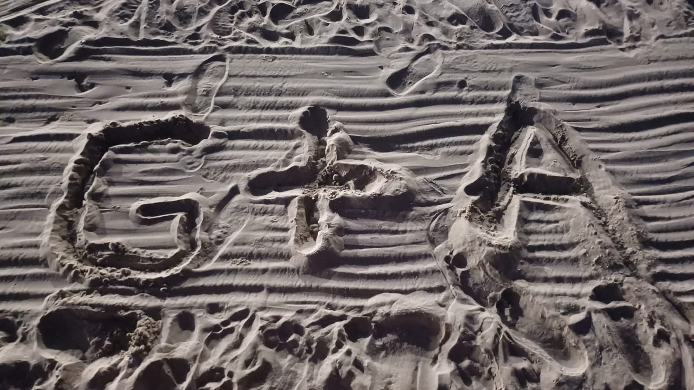

Muitos se perguntam como é namorar a mulher mais incrível do mundo, como é a sensação de querer estar perto de uma pessoa que te faz tão bem?
Bom, namorar ela é inexplicável, porque ela é inexplicável. Ela tem olhinhos brilhantes que você enxerga até no escuro. Ela tem a melhor risada que você vai ver na sua vida.
O abraço dela é o lugar mais gostoso de se estar e a voz dela é a predição de que tudo vai ficar bem. Você sente de longe o carinho que ela tem por você, e dá a maior vontade de retribuir esse amor, esse amor leve e verdadeiro.
Quando você menos percebe, a vida te dá os acontecimentos mais impensáveis, mas eu realmente não esperava que ele fosse colocar na minha vida alguém como ela. Eu costumo falar que ela é o Sol da minha vida, porque só de conversar, mesmo que não seja presencialmente, só
de saber que ela existe, só de estar grudadinhas se olhando, só de saber que eu posso dar todo o meu amor pra ela, só de marcar a próxima vez que a gente vai se ver e esperar ansiosamente por isso, o meu dia já se ilumina, fica completo.
As vezes é muito difícil escrever sobre tudo que ela é, porque são sentimentos tão grandes, mas a sensação de estar com ela é:
A sensação de quando tá frio e você finalmente encontra e se enrola em uma coberta quentinha;
É quando você acorda e vê um céu azul mágico de manhã;
É quando você tira uma nota boa naquela prova que você passou a semana inteira estudando;
Quando você da um rolê incrível com os seus amigos;
Eu quero estar com ela em todos os momentos, felizes e confortáveis, tristes e difíceis. Eu quero estar pra sempre com a mulher mais incrível do mundo, que me deu a oportunidade de amar quem eu quero amar.